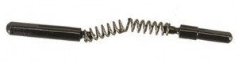
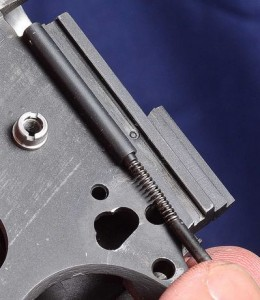

Some time ago I wrote a post on “a hard safety vs. a soft safety“. Now I find out that the safety on the 1911 wasn’t working properly. My 1911 has been in the shop for other reasons but when it came back, my gunsmith said he noticed the issue and he’d fixed it.
Ideally, the rear plunger rests in a small indent on the the thumb safety. It keeps the safety on until enough downward pressure moves it to the off position. My S&W 1911 either didn’t have an indent or it was in the wrong place. To fix the problem, the gun was partially disassembled: the slide was removed and the plunger spring was removed. The safety was put in the correct position to be “on” and a long drill bit was passed through the plunger tube and into the safety. Bingo! The indent is now perfectly placed.
My gunsmith told me to bring it back if I wanted to tighten it up. The drill bit was dulled so he’d have to take it back to his machine shop to sharpen the bit again to make the indent deeper. Clearly my safety is made of some very hard material. Once I get to shoot it, I’ll make that decision (and maybe get pictures of the process).
I’m just thrilled to hear a “click” now when I put the safety on or take it off. I honestly thought this was the way the gun was supposed to work.
Although the gun was in the shop for other reasons, it was worth the trip the the gunsmith to get a problem fixed I didn’t know I had. I’m pretty excited about that!
If’ you’d like some visuals, here are the parts typically inside the plunger tube (from here) This is where they go in the plunger tube (from here)And here is how the plunger tube lines up with the safety to make it go “click” (from here)
{kind=link}
{kind=link}

Excellent notes!
Raised on the 1911, in all it’s varied models/manufacturers/vintages, I’ve come across a great variety in the feel of the thumb safety. A tactile click is pretty important.
I wanted to comment on that first image- the spring *should* have that kink in it- most manufacturers fail to provide it though ( usually just make it with a needle nose pliers when I come across a straight one) . The kink prevents the spring ( and the Plungers) from shooting off under the couch when the safety is removed.
Instead of using a jobber bit, I usually just replace a soft safety with one that has a pronouced peak on the bearing suface, as seen here:
http://shopwilsoncombat.com/images/659s-002.jpg
There is a little dimple there in the Off position, but the positive feel of the safety comes from the sharper peak on the bearing surface. I’ve found a few safetys to be dimpled too deeply to have a sticky feel to the safety instead of a nice clean positive click.
Thanks for contributing! This is my first and only 1911 so, having nothing to compare it to, I just figured that’s how they worked. Boy was I wrong.
It’s kind of sad that it came that way, brand new from S&W. I’m more interested in shooting guns than working on modifications or I might have picked up on this earlier.
I know this is an older post, but I’m new here, catching up.
I’ve carried a Wilson 1911 for, oh, more than 20 years. PDW and my competition pistol, well over 100,000 rounds for it. Just got smoother with time.
I did have ONE failure very late in that round count that was clearly a failure of the pistol, and that was when one of the “stems” of the plunger tube assembly sheered. I sent it off to Wilson, they had it back to me in two days, fixed, and with two new magazines–no charge.
I also am an owner of a S&W 1911 (but in 9mm–a “girlie gun” 🙂 ). New from the gun store the thumb safety was so hard to press on and off as to be unmanageable (I’m over 6′, over 200 lbs, had to strain to work the thumb safety–my wife couldn’t work it at all). Took the thumb safety out, and the internal chunk was covered with burrs and other nonsense. Threw it away, dropped in a Wilson replacement, and everything’s fine. But that’s a hell of a thing in a 1911 I paid, I think, ~$1,300 for just a few years ago.
Anyway, just my two cents. 🙂
–Andrew, @LawSelfDefense
Andrew,
I have the same “girlie gun”: S&W 1911 in 9mm. The 1911 because I have small hands and wanted a single stack. The 9mm to lower the cost of practice and match ammo. I paid just over $1300. I guess this is the low end of full sized 1911s but I’d expect better for that price point. I’m still shooting it though and every malfunction is a learning experience.
It’s also given the the opportunity to do a full take down and learn more about the inner workings of pistols.
Thanks for stopping by!
–Sadie